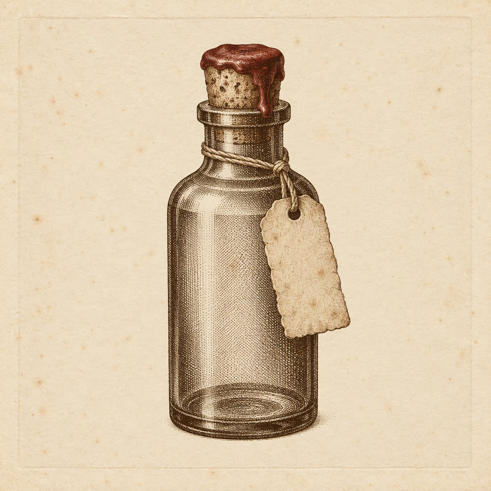

Certified inert · SV-01
1605 · Agra · Corridor 4
Certified Air, 1605
One apothecary bottle of air drawn from the Mughal court at dusk. Inert, odourless and slightly warmer than the room you are standing in. It does not transport you; that is the visa.
T 340Per bottle · 12 left